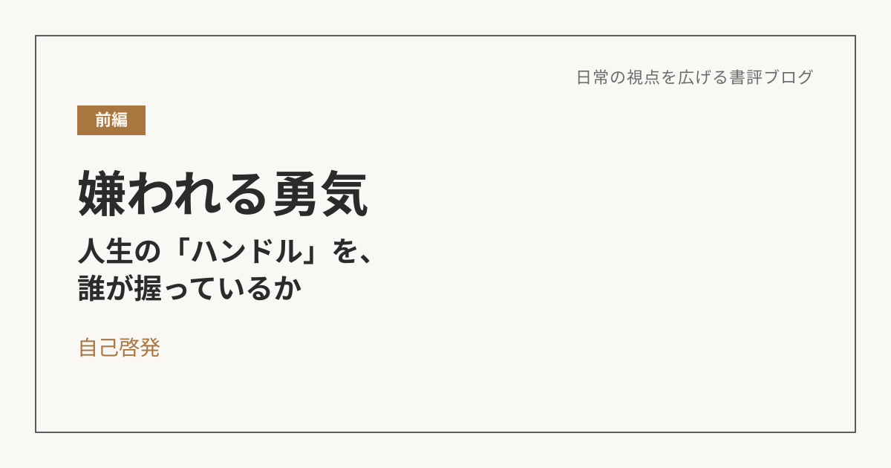

-
 小説
小説
傲慢と善良――"あの人、性格悪いよね"を鵜呑みにしない、という選択
人を一言で評する言葉ほど、実は信じてはいけない。
-
 歴史・哲学
歴史・哲学
43歳頂点論――なぜ人は、死に近づくことでしか"生きている"と思えないのか
誰よりも生を欲するからこそ、誰よりも死に近づいていく人たちがいる。
-
 歴史・哲学
歴史・哲学
暇と退屈の倫理学――退屈は、消すものではなく、味わうものだった
退屈をゼロにしようとするのではなく、退屈の中に楽しさを見出していく。
-

自己啓発嫌われる勇気（前編）――人生の「ハンドル」を、誰が握っているか
過去のせいにしている限り、自分の人生のハンドルは握れない。
-
 自己啓発
自己啓発
嫌われる勇気（後編）――原因論と目的論という補助線で、物語と現実を読み解く
過去を「命令」として生きるか、「資源」として使うかで、行き先は変わる。